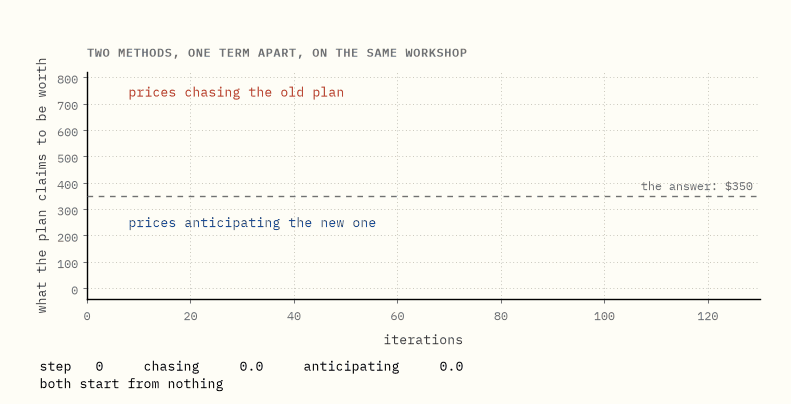
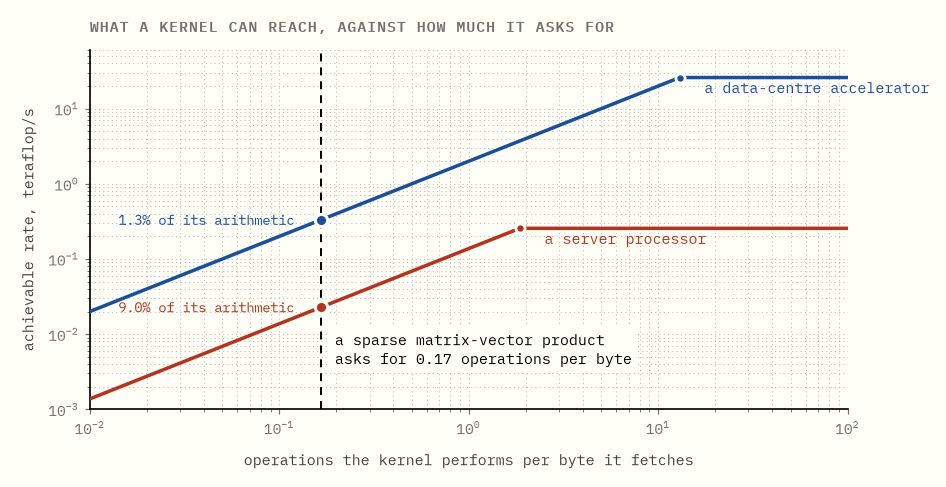
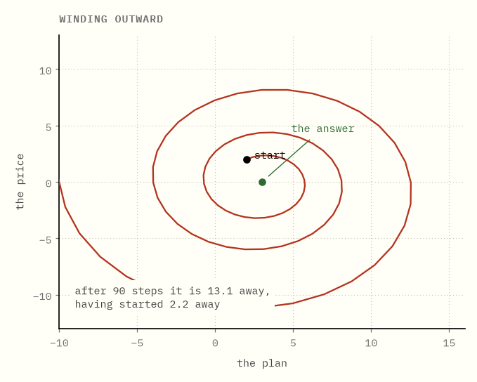
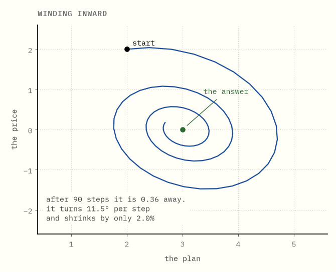
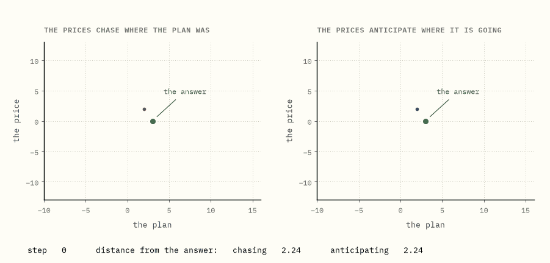
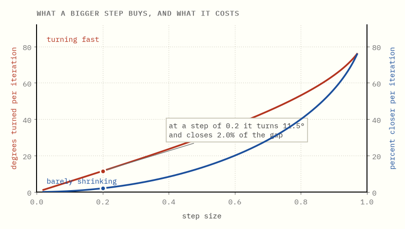
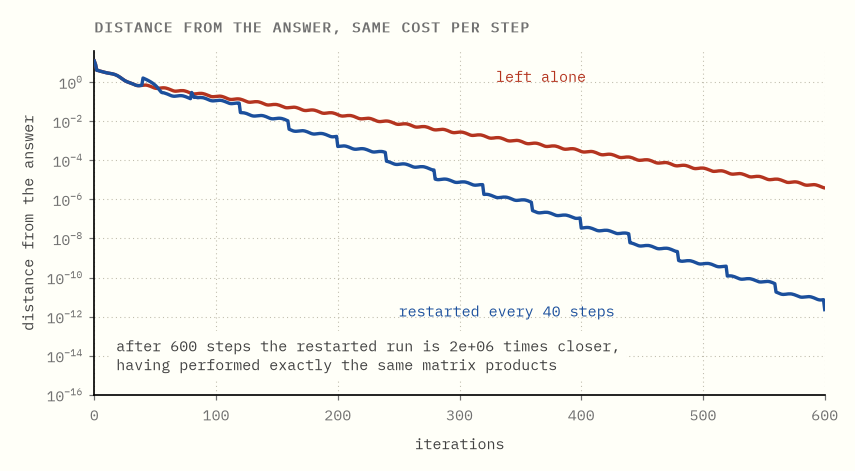
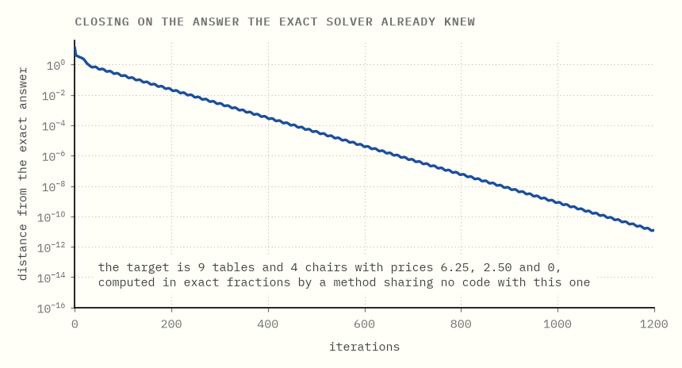
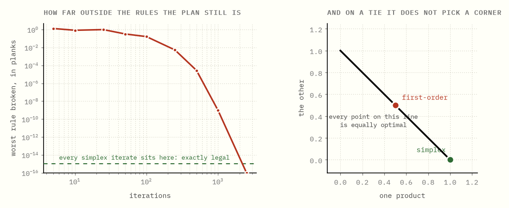

The machine got wider, not faster
Why linear programming had to change algorithms to use a GPU.
Two methods, the same small workshop, the same starting point, the same step sizes. Their inner loops cost the same to run and differ by one term in one line.
One of them lands on $350, which is exactly right. The other never lands on anything. Four thousand iterations in it is still swinging between $0 and $753, and it would still be swinging after four million.
Nobody puts up with a method that delicate unless something forces them to. What forced them is the hardware. For thirty years the way to solve a linear program faster was to buy a quicker processor; that stopped working, and what replaced it was not a quicker processor but a much wider one, thousands of arithmetic units fed by a memory system that did not get thousands of times faster.
The simplex method cannot use a machine like that. Not because nobody has tried, but because of what it is: a chain of decisions where each one depends on the last.
So the interesting question is not how to parallelise simplex. It is what a method would have to look like to use the hardware at all, and what you give up by using it. The delicate one is the answer.
The plan. Chapter 1 is about the hardware and why it changes which algorithms are worth having. Chapter 2 is why simplex is the wrong shape. Chapters 3 to 7 build a method that is the right shape, starting from the version that does not work. Chapters 8 and 9 are whether it gets the right answer and what it costs.
Every number below is computed by the code in this folder. The answers it is checked against come from the exact rational simplex in the duality guide, which shares no line of code with anything here.
0What this is

Each curve is what one method thinks its current plan is worth, plotted against how many iterations it has run. The problem behind them is a workshop with three shelves of raw material and two things it can build, and it is small enough that the right answer is known exactly.
The red one never settles. It is still swinging between $0 and $753 after four thousand iterations, and it will do that forever.
The blue one stops on $350, which happens to be exactly right.
Neither is a bug, and neither is badly tuned. The two updates differ by one term in one line, and most of this guide is about that term: where it comes from, why anyone would want a method built this way, and what it still cannot do.
In one sentence. A method that can use parallel hardware is available, but only just, and the difference between it working and not is very small.
1Wider, not faster
Start with the hardware, because it determines which algorithms are worth having.
A modern accelerator has enormously more arithmetic capability than a server processor. It does not have proportionally more memory bandwidth. Roughly: a hundred times the arithmetic, but only about fifteen times the rate at which it can fetch numbers to do arithmetic on.
Which of those two numbers you get depends on your work, and there is a single question that decides it. How much arithmetic do you get to do for every byte you had to fetch to do it? Multiply two dense matrices and the answer is enormous: every number you load is used hundreds of times over. Add two long lists of numbers and the answer is dismal: load sixteen bytes, do one addition, move on. Everyone calls this ratio arithmetic intensity, and it is the only property of a computation the next chart cares about.
So count it for the operation this guide is about. Multiplying a sparse matrix by a vector, the way solvers store matrices, costs about 12 bytes per stored entry: eight for the value and four to record which column it sits in. Having fetched that entry, you do 2 operations with it: one multiply, one add. Then you never look at it again.
Two operations per twelve bytes. 0.17 operations per byte. About as poor as it gets.
Now put that against the machines.

A machine has an intensity of its own: divide its arithmetic rate by its bandwidth and you get the number of operations it can perform in the time it takes to deliver one byte. Below that number the arithmetic is starved; above it, fed. Feed it work above that number and its memory system keeps up and the arithmetic runs flat out. Feed it work below, and the arithmetic waits.
The accelerator can perform 13 operations for every byte it delivers. Give it work that asks for 0.17 and almost all of that arithmetic sits idle: it reaches 1.3% of what it could do, because 0.17 divided by 13 is about a hundredth. The server processor, which can perform 1.9 operations per byte, reaches 9% of its own, by the same division. The chart says only this much: each machine's ceiling rises with intensity until it hits the flat roof of its own arithmetic, and our work sits far to the left of both roofs.
And yet the accelerator is still the faster machine here, by 14.5×, which is precisely the ratio of their bandwidths, not the ratio of their arithmetic, which is about a hundred. Both machines are being starved; the one with the fatter pipe is starved less.
For this kind of work, buying a machine with more arithmetic buys you nothing. Buying one with more bandwidth buys you exactly what it says.
Which tells you what a good algorithm looks like: one whose entire inner loop is streaming over the matrix, and which does no other kind of work at all.
In one sentence. Sparse matrix work is limited by memory bandwidth, not arithmetic, so the only speedup available is the bandwidth ratio.
2Why simplex is the wrong shape
The simplex method walks from corner to corner of the feasible region, and each step is a chain:
- Work out which product would improve the plan if you started making it.
- Work out how much of it you can make before some rule binds.
- Update the plan, and update the bookkeeping that made step 1 answerable.
You cannot start step 1 of the next iteration until step 3 of this one has finished, because step 3 is what changes the answer to step 1. The dependency is not incidental to the implementation; it is the method. Each corner is chosen using the information produced at the previous corner.
There is a second problem underneath. The bookkeeping in step 3 is a factorisation of the current basis, maintained incrementally, and solving with it is a triangular solve: a sequence of substitutions where each one needs the previous result. Sparse triangular solves have very little parallelism in them by construction.
None of this makes simplex a bad method. It is an extremely good method, and on most problems it is still the one to use. It is simply the wrong shape for a machine whose advantage is doing ten thousand independent things at once.
(Why interior point methods are a different shape again, and where each one wins, is the guide before this one.)
In one sentence. Simplex is a chain of dependent decisions, so its speed comes from taking few steps rather than from taking them in parallel.
3A method made of one operation
So ask for the opposite. What would a method look like if the only thing it ever did was multiply by the matrix?
To answer that, this chapter has to write down what the matrix is, so the rest of the guide can talk about it. The problem is the workshop from the duality guide, which builds tables and chairs out of three things it has a limited amount of:
| planks | hours of work | saw time | sells for | |
|---|---|---|---|---|
| a table | 4 | 2 | 3 | $30 |
| a chair | 2 | 3 | 1 | $20 |
| in stock | 44 | 30 | 32 |
Call the six recipe numbers A: three rows, one per shelf, and two columns,
one per product. A plan is two numbers, how many tables and how many chairs,
and it is called x. Then Ax means "run the plan through the recipes and
report what it consumes". Build 5 tables and 2 chairs and the plank row gives
4×5 + 2×2 = 24 planks; the other two rows give the hours and the saw time. So
Ax is a shopping list, one entry per shelf, and the stock levels are another
such list called b. The workshop's question, written for a machine, is
choose a plan
x, at least zero in every entry, so thatAxstays under the shelf limitsb, making the profit as large as possible.
The duality guide's second idea gives the other half: put a price on each
shelf, so much per plank, so much per hour of work, so much per hour of saw
time, and collect the three prices in a list called y.
Prices need the same table read the other way. A row of A is a shelf and
tells you which products drain it. A column of A is a product and tells you
what that product is made of: a table is 4 planks, 2 hours and 3 of saw time.
Multiply a column by the prices and add up, and you have what one table's
ingredients cost. Doing that for every column at once is what A transposed
times y means, written Aᵀy. Transposing is not an operation performed on
anything; it is a decision to read the same six numbers down instead of across.
A turns a plan into a bill for shelves. Aᵀ turns shelf prices into a price
per product.
One worked case, using the prices that turn out to be right in chapter 8, $6.25 a plank, $2.50 an hour, nothing for the saw: a table's ingredients cost 4×6.25 + 2×2.50 + 3×0 = $30, which is exactly what a table sells for. At those prices, building a table breaks even to the penny. No coincidence, and the duality guide is where it comes from.
Now score any pair of plan and prices with a single number:
L(x, y)= what the plan costs, plus the prices times how much the plan overruns each shelf.
The first half is the plan's own score, with profit counted as a negative cost so that a workshop trying to earn the most is a plan trying to cost the least. The second half is a fine. Overrun the plank shelf by three planks with planks priced at $6.25 and you are charged $18.75 for it. Leave planks spare and the term goes the other way, which is the prices saying they would rather be zero on a shelf nobody is fighting over.
The plan wants this small. The prices want it large: if a shelf is overrun, raising its price punishes the plan for it. The answer is the standstill where neither side can improve by moving: the plan is the best one, and the prices are the shadow prices of chapter 7 over there.
Now the point. To improve the plan you need to know, at the current prices,
whether a product earns more than its ingredients cost, and that comparison is
the profit against Aᵀy. To improve the prices you need to know which shelves
are overdrawn, and that is Ax against b. Two questions, two readings of the
same table, one matrix-vector product each. Then you clamp anything that went
negative back to zero, because there are no negative chairs and no negative
prices.
That is the whole vocabulary. Two matrix-vector products, some vector addition, and a clamp. No factorisation, no basis, no pivoting, no ordering, nothing sequential.
It is exactly the shape chapter 1 asked for. The only question left is whether it works.
In one sentence. Treating the plan and the prices as two players lets you build a method out of nothing but matrix-vector products.
4The obvious version does not work
The obvious thing is to move both at once. Push the plan down a little, push the prices up a little, repeat.
To see what happens, shrink the problem until the whole state fits on a page:
one variable, one rule, x = 3. Nothing to maximise, one shelf, one product,
and the plan simply has to hit 3. Then the state is a plan and a price, two
numbers, and the path they trace is a curve in a plane.
With one of each, both matrix-vector products of chapter 3 collapse to a single multiplication, and the whole method is two lines. Take the step size to be 0.2 on both sides. Each iteration does:
new plan = plan + 0.2 × price
new price = price − 0.2 × (plan − 3)
The plan is pushed in whichever direction the price is pointing. The price
rises whenever the plan is short of 3 and falls whenever it is over. The catch
is in the second line: the plan it reads is the old one, from before the
first line ran.
Follow it from a plan of 2 and a price of 2. The price is 2, so the plan moves up to 2.4. The plan was 2, a unit short, so the price climbs to 2.2. Next round the plan reaches 2.84 and the price 2.32. The plan crosses 3 on the third step and the price is still rising, because the plan it is being shown is the one from before the crossing. By the time the price notices and turns around, the plan is at 3.77 and sailing away.

It winds outward. It starts 2.2 away from the answer and after 90 steps it is 13.1 away, and it keeps going.
Every lap is that same overshoot, in both directions, and each one is wider than the last. The two sides are not fighting each other. They are each answering a question about where the other one was, one step too late, and a pair of players who are each a step behind the other will circle forever. Nothing in the update ever notices.
On the real workshop the failure looks different but is no better. There the clamp at zero keeps the numbers from running away, and instead the method settles into an exact repeating cycle of period 10: the plan climbs to about 17 tables, the prices spike, the plan is slammed to nothing, the prices decay, and it begins again. The value it reports swings between $0 and $753, and it never once sits at $350.
It does not diverge. It does not converge. It just keeps going.
In one sentence. Two players each reacting to the other's previous move circle forever instead of settling.
5One term different
Here is the fix, and it is almost nothing.
When the prices react, do not show them the plan's current position. Show them where the plan is heading: the new plan, plus the step it has just taken, again.
If the plan moved from x to x′, the prices are shown 2x′ − x, which is
x′ plus the change x′ − x a second time. That is the cheapest imaginable
guess at where the plan will be next: assume it keeps going the way it was
going. On the toy problem the second line becomes
new price = price − 0.2 × (2 × new plan − plan − 3)
and nothing else changes. First step from a plan of 2 and a price of 2: the plan still moves to 2.4, but the price is now shown 2×2.4 − 2 = 2.8 instead of 2. Still short of 3, so the price still rises, but to 2.04 rather than 2.2. The correction is smaller because it arrives less late, and that is the entire repair.

Same problem, same step sizes, same starting point, one changed term. The spiral reverses. After 90 steps it is 0.36 away instead of 13.1.
Side by side, from the same start, it is not a subtle difference:

This is the primal-dual hybrid gradient method, and it is the algorithm underneath the first-order LP solvers that run on GPUs.
Its per-iteration cost is unchanged: still two matrix-vector products, still no factorisation. It has not become a more expensive method. It has become a convergent one.
In one sentence. Letting the prices anticipate the plan's next move rather than react to its last one turns the spiral inward, at no extra cost.
6It turns fast and shrinks slowly
The spiral converges. The trouble is how.
Look at what one step of the inward spiral does. It carries the point some way around the answer, and it brings it a little way in. A turn and a shrink, over and over, and not only in the drawing. On the toy problem there is no clamping and no case analysis, so if you measure the state as an offset from the answer, one iteration is exactly "multiply that offset by a fixed two-by-two matrix", and it is the same matrix every time.
A matrix that turns everything has no direction it merely stretches, so it has no real eigenvalues. What it has instead is a conjugate pair of complex ones, and a complex number carries exactly two pieces of information, which here are the two things the spiral is doing: the angle of the pair is how far one step turns, and the size of the pair is what one step multiplies the distance by. Both come out in closed form. With a step size of 0.2:
- it turns 11.5° per iteration, so a full revolution takes 31.2 steps
- it shrinks the distance to the answer by 2.0% per iteration
Put them together and the difficulty is plain. Thirty-one steps of shaving 2% off a distance leave you about half as far away as you began, so one full revolution of that spiral buys you one halving. It is spinning quickly and closing in barely at all.
And you cannot fix it by taking bigger steps, because the two are locked together.

Raising the step size does make it contract faster. It also makes it rotate faster, and past a threshold the method stops converging at all. The setting that keeps it stable is the setting that makes it crawl.
So most of the work is going into going round, and only a sliver into going in.
In one sentence. The iteration rotates far more than it contracts, and the step size cannot fix that because it drives both.
7Cancel the rotation
If the problem is rotation, remove the rotation.
Averaging is the tool. Average the iterates over a full revolution and the turning cancels, because points on opposite sides of the circle pull in opposite directions, while the inward drift does not.
That second half deserves a beat. Picture one revolution as a batch of points spaced around a ring centred on the answer. Every point in the batch has a partner roughly opposite it, and when you average a pair like that the two sideways offsets are pointing opposite ways, so they cancel and what survives is the centre. The shrinking is not like that. It never reverses. Every step takes 2% off the radius, so every point in the batch is a little closer than the one a full turn before it, and no later point ever undoes it. Average the batch and you are left with the ring's centre and the progress inward, which is the part you wanted. Then throw away the state, start again from the average, and do it once more.

Same iteration. Same two matrix products per step. Same step sizes. Restarting every 40 iterations leaves it, after 600 iterations, about a million times closer to the answer.
Nothing was added to the inner loop. The averaging is vector work, invisible next to the matrix products. It is very close to a free improvement of six orders of magnitude, and it is why practical first-order LP solvers all restart.
(Real solvers choose the restart moment adaptively rather than on a fixed schedule, and there are stronger variants than plain averaging. The mechanism is the one above.)
In one sentence. Averaging over a revolution cancels the rotation and keeps the drift, which costs nothing and is worth orders of magnitude.
8Does it get the right answer?
It should be checked against something that cannot be wrong.
The duality guide solved this workshop in exact rational arithmetic with a simplex method: 9 tables and 4 chairs, worth $350, with shadow prices of $6.25 a plank, $2.50 an hour and nothing for saw time.

The first-order method finds the same plan, to fifteen decimal places.
It also finds the same prices. That is worth pausing on, because it is not an extra: the prices are half of what the method is, so it produces the shadow prices without being asked. The duality guide's second problem is not something this method solves afterwards. It is the thing it was solving all along.
In one sentence. It converges to the same plan and the same shadow prices as the exact method, because the prices were half the algorithm.
9What it costs
Two costs, and they are the reason this has not replaced anything.

The plan is not legal until it has converged. A simplex iterate is always standing on a corner of the feasible region, so it is a plan you could actually carry out at every step. A first-order iterate approaches feasibility from outside. Ten iterations in, this one proposes a plan overrunning a shelf by 0.84 planks and claims to be worth $352.44, more than the true optimum, because it is cheating. It is worth more than any legal plan for the plain reason that it is not one: it is spending planks the workshop does not have.
That is not a rounding error, it is a category difference. Stopping simplex early gives you a legal plan that might not be the best. Stopping this early gives you a number that is not an answer to your question at all.
And it does not return a corner. Take a problem where a whole edge is optimal, every point on it equally good. The exact method returns one of the two corners. The first-order method returns the middle.
Both are optimal, so for reporting a number it makes no difference. But branch and bound needs a corner: it needs a basis to warm-start the next node from, and a point in the middle of an edge does not give it one. Which is why first-order methods have transformed how very large linear programs get solved, and have so far changed integer programming much less.
In one sentence. You trade a legal answer at every step, and a corner at the end, for an inner loop that a wide machine can actually feed.
10Where this leaves things
The honest summary is narrow and worth stating precisely.
For linear programs large enough that forming and storing a factorisation is the binding constraint, a method whose entire inner loop is matrix-vector products is a genuinely different proposition, and hardware built for bandwidth suits it. That is a real and important class of problem, and it was previously not solvable at all.
For everything else, the established methods remain established for good reasons: problems where a factorisation fits comfortably, problems needing high accuracy, problems that are really integer programs wanting a basis at every node. The chapters above are most of those reasons.
What has actually changed is that the answer to "which algorithm" now depends on the machine, in a way it did not for thirty years.
The specific benchmark numbers in this area move quickly and I have not quoted any, because a guide that dates in six months is worse than one that does not try. The primary sources, if you want the current state: the PDLP paper by Applegate and co-authors, the cuPDLP line of work, and Mittelmann's benchmark pages, which are updated continuously.
What the plain words are really called
| this guide says | everyone else says |
|---|---|
| operations per byte fetched | arithmetic intensity |
| the chart of what a machine can reach | a roofline model |
| a method made only of matrix products | a first-order method |
| the plan and the prices as two players | the saddle point / Lagrangian formulation |
| showing the prices where the plan is heading | extrapolation |
| the method of chapter 5 | PDHG, primal-dual hybrid gradient |
| the LP solver built on it | PDLP |
| average and start again | restarting |
| a plan that breaks a rule | primal infeasibility |
| a corner of the region | a basic solution |
Running the code
make bootstrap # once, from the repository root
cd lp-on-gpu && make verify
There is no GPU in this repository and none is needed. Everything here is about the shape of the iteration, which is what determines whether a wide machine can be used at all, and that is visible at three variables as clearly as at three million. The tests check every claim above against the exact rational solver from the duality guide.